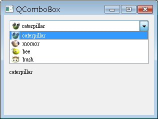

QComboxBox可以建立下拉選單，以供使用者選取項目，以下直接看個簡單的示範，程式中包括下拉選單，選擇選項之後會改變QLabel的文字內容：
#include <QApplication>
#include <QWidget>
#include <QLabel>
#include <QComboBox>
#include <QVBoxLayout>
#include <QIcon>
int main(int argc, char *argv[]) {
QApplication app(argc, argv);
QWidget *window = new QWidget;
window->setWindowTitle("QComboBox");
window->resize(300, 200);
QComboBox *combo = new QComboBox;
combo->setEditable(true);
combo->insertItem(0, QIcon( "caterpillar_head.jpg" ), "caterpillar");
combo->insertItem(1, QIcon( "momor_head.jpg" ), "momor");
combo->insertItem(2, QIcon( "bush_head.jpg" ), "bush");
combo->insertItem(3, QIcon( "bee_head.jpg" ), "bee");
QLabel *label = new QLabel("QComboBox");
QVBoxLayout *layout = new QVBoxLayout;
layout->addWidget(combo);
layout->addWidget(label);
QObject::connect(combo, SIGNAL(activated(const QString &)),
label, SLOT(setText(const QString &)));
window->setLayout(layout);
window->show();
return app.exec();
}
QComboBox的setEditable()方法可設定下拉選單的選項是否可編輯，使用insertItem()插入選項
時，可以使用QIcon設定圖示，當您選擇下拉選單的某個項目時，會發出activated()的Signal，QString的部份即為選項文字，這邊
將之連接至QLabel的setText()，以改變QLabel的文字，一個程式執行的畫面如下：

|
|